| Seleccione la opción sobre la que necesita ayuda |
| Reporte |
| Editar |
| Sticker |
| Transferir |
| Tipos Documentales |
| Solicitar |
| Prestado |
| Imprimir |
| Anular |
Para que los cambios sean realizados en el archivo usted deberá hacer clic en el icono Cerrar al finalizar los procedimientos en la ventana Detalle de Comunicación.
| Comunicaciones Detalle de Archivos |
Detalle de Archivos le guiará paso a paso en la ejecución de las diferentes opciones que aparecen en el detalle del archivo de cada uno de los Módulos de Archivo.
Permite hacer cambios a una Documentación Técnico que ya esta creada.
Para editar un documento técnico realice los siguientes pasos:
- Haga clic en el icono Editar.
- Haga clic o edite donde desea realizar los cambios
- Haga clic en Guardar.
 - El sistema lo enviara de nuevo al detalle de la documentación.
- El sistema lo enviara de nuevo al detalle de la documentación.
- Haga clic en cerrar para finalizar y guardar definitivamente los cambios.
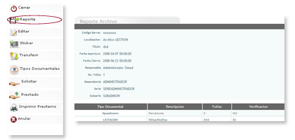
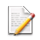
Editar  Permite hacer cambios a una unidad documental ya creada.
Permite hacer cambios a una unidad documental ya creada.
Para editar una unidad documental realice los siguientes pasos:
- Haga clic en el icono Editar.
- Haga clic y/o edite los campos a los que desea realizar cambios.
- Haga clic en guardar para almacenar los cambios realizados.
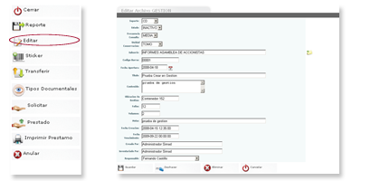
 - Haga clic en Deshacer para borrar los cambios realizados.
- Haga clic en Deshacer para borrar los cambios realizados.
 Permite imprimir el sticker de una unidad documental creada para ser pegado en su correspondiente carpeta.
Permite imprimir el sticker de una unidad documental creada para ser pegado en su correspondiente carpeta.
Para generar un sticker realice los siguientes pasos:
- Haga clic en el icono Sticker.
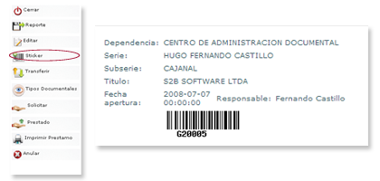
 - Imprima y pegue el sticker en la tapa de la unidad documental para la cual fue creado.
- Imprima y pegue el sticker en la tapa de la unidad documental para la cual fue creado.
 Envía una unidad documental de un archivo de gestión a un archivo central o de un archivo central a un archivo histórico.
Envía una unidad documental de un archivo de gestión a un archivo central o de un archivo central a un archivo histórico.
Para para realizar una transferencia de una unidad documental a un archivo central o histórico realice los siguientes pasos:
- Haga clic en el icono Transferir.
- Digite el número de folios del cual esta conformado la transferencia.
- Haga clic en calendario para seleccionar la fecha de cierre de la transferencia.
- Haga clic en Guardar.
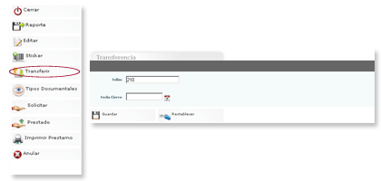
 - Haga clic en Reestablecer para borra los datos ingresados.
- Haga clic en Reestablecer para borra los datos ingresados.
- Haga clic en cerrar para finalizar.
- Las unidades documentales sólo se puede transferir de gestión a central y de central a histórico.
 Encuentra la lista del contenido de cada carpeta de acuerdo a la subserie a la cual pertenece.
Encuentra la lista del contenido de cada carpeta de acuerdo a la subserie a la cual pertenece.
para ver el contenido de la unidad documental realice los siguientes pasos:
- Haga clic en el icono Tipos Documentales.
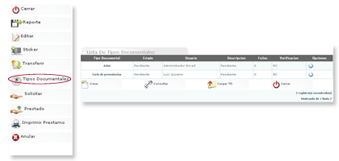
 Opciones Tipos Documentales
Opciones Tipos Documentales
- Crear: Crea un tipo documental que hace parte de la carpeta que se esta consultando.
- Consultar: Consulta los tipos documentales de una determinada carpeta.
- Cargar TD (tipos documentales): Carga la lista de contenido de cada carpeta de acuerdo a la subserie a la cual pertenece.
- Cerrar: cierra la ventana y lo envía a la lista de archivos de gestión.
Si desea ver los detalles de un tipo documental realice los siguientes pasos:
- Haga clic en el icono en la opciones.
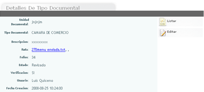
Para editar un tipo documental realice los siguientes pasos:
- Haga clic en Editar.
- Realice los cambios que crea necesarios.
- Haga clic en Guardar.
- Si desea adjuntar un archivo haga clic en el icono de ruta.
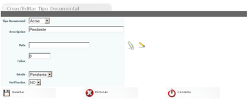
 - Si desea adjuntar un archivo haga clic en el icono (clip) de ruta.
- Si desea adjuntar un archivo haga clic en el icono (clip) de ruta.
- Si desea borrar el tipo documental haga clic en eliminar.
- Haga clic en cancelar para volver a los detalles del tipo documental.
 Permite a los usuarios solicitar al CAD una unidad documental en calidad de préstamo.
Permite a los usuarios solicitar al CAD una unidad documental en calidad de préstamo.
Para hacer una solicitud realice los siguientes pasos:
- Haga clic en Solicitar.
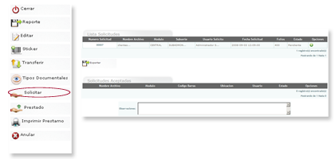
 - El sistema mostrará la lista de solicitudes pendientes.
- El sistema mostrará la lista de solicitudes pendientes.
- Si desea imprimir una lista de solicitudes haga clic en exportar.
Para adicionar la unidad documental a un préstamo realice los siguientes pasos:
- Haga clic en opciones en el icono adicionar.
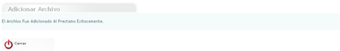
 - Haga clic en cerrar para regresar a la lista de solicitudes.
- Haga clic en cerrar para regresar a la lista de solicitudes.
- Si un administrador del archivo desea anular una solicitud debe seleccionar la solicitud haciendo clic en anular.
Para anular la unidad documental a un préstamo realice los siguientes pasos:
- Haga clic en opciones en el icono Anular.
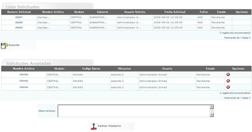
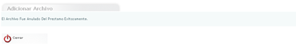
 - El administrador puede escribir en el campo de observaciones lo relacionado con el préstamo.
- El administrador puede escribir en el campo de observaciones lo relacionado con el préstamo.
- Haga clic en radicar préstamo para ver el formato del préstamo y radicar el préstamo de la unidad documental.
- Haga clic en imprimir préstamo para realizar la impresión de la solicitud.
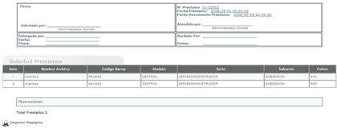
 - La casilla de opciones de la lista de solicitudes solo esta disponible par los administradores del archivo.
- La casilla de opciones de la lista de solicitudes solo esta disponible par los administradores del archivo.
- Los administradores del archivo son las únicas personas que pueden agregar, anular o radicar solicitudes a un préstamo.
 Muestra los detalles de archivo de la unidad documental que se solicito.
Muestra los detalles de archivo de la unidad documental que se solicito.
Para ver los detalles de la solicitud del préstamo realice los siguientes pasos:
- Haga clic en el icono Prestado.
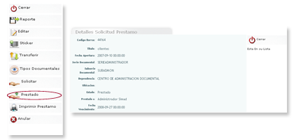
 Imprime los detalles de archivo de la unidad documental seleccionada.
Imprime los detalles de archivo de la unidad documental seleccionada.
Para imprimir detalles de la solicitud del préstamo realice los siguientes pasos:
- Haga clic en el icono imprimir.
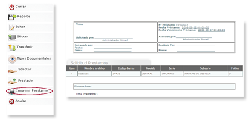
 Permite eliminar el archivo o unidad documental que se haya seleccionado.
Permite eliminar el archivo o unidad documental que se haya seleccionado.
Para anular un archivo realice los siguientes pasos:
- Haga clic en el icono Anular.
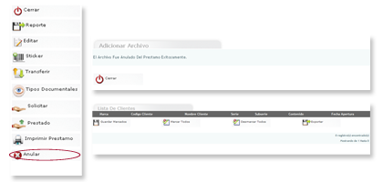
 - El sistema mopstrará la lista sin el archivo eliminado.
- El sistema mopstrará la lista sin el archivo eliminado.